קפיצה גדולה
פלטפורמר דו-ממדי בעברית, עם הגיבור צוקי ציקי ובחירת קושי: רגיל או קל. אחד עשר שלבים בשלושה עולמות, לכל אחד רעיון משלו: קפיצים, מעליות, טיפוס, רוח, שיטפון, חושך, מרדף, סולמות, עננים שוקעים, התגנבות, ובסוף קרב מול ענק הכפור.
הורדהAndroid47 מגה-בייט
נבדק באמולטור, עדיין לא בטלפון אמיתי.
הורדהWindows48 מגה-בייט
הגרסה הזו נבנתה, אבל עדיין לא נבדקה בהרצה.
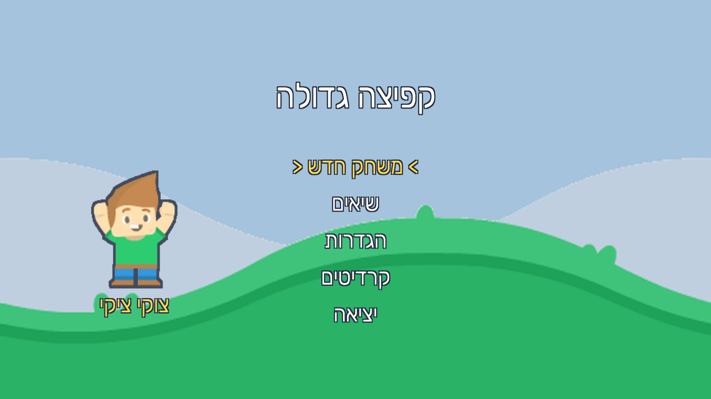
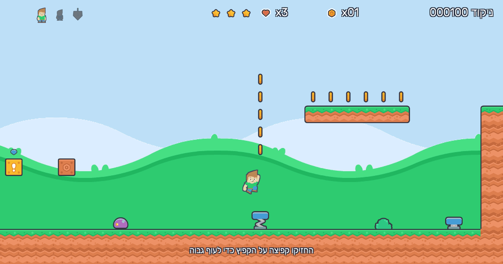
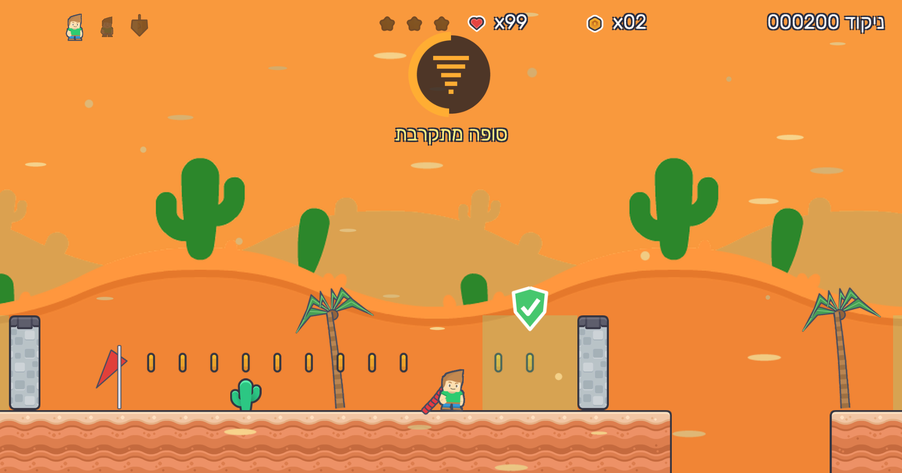
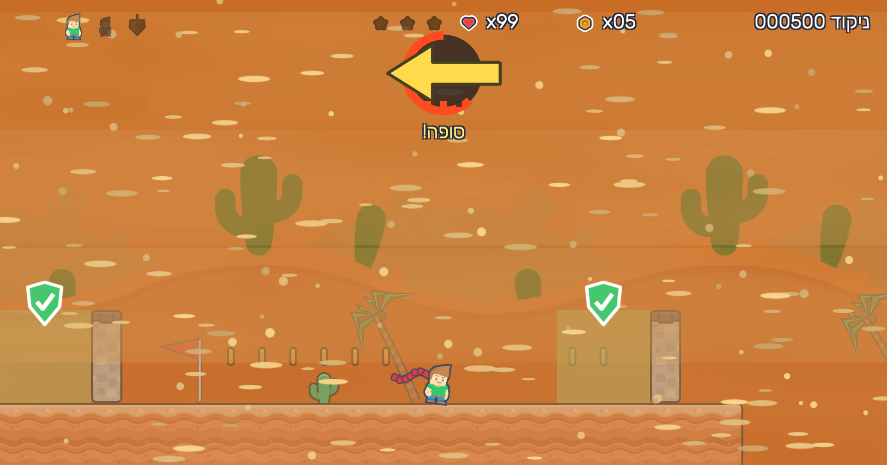
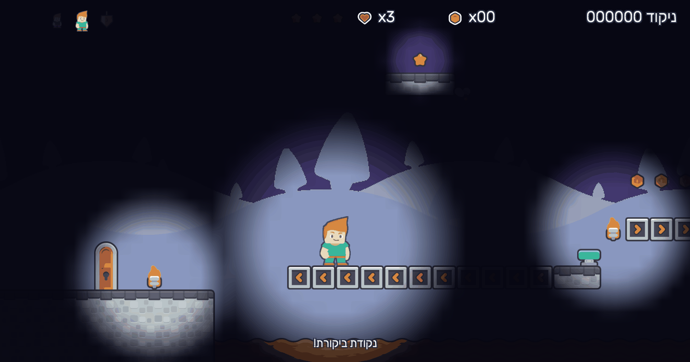
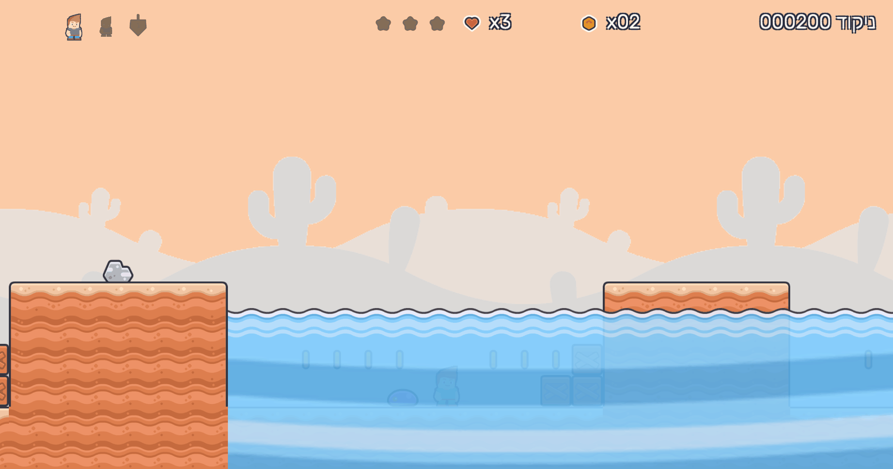
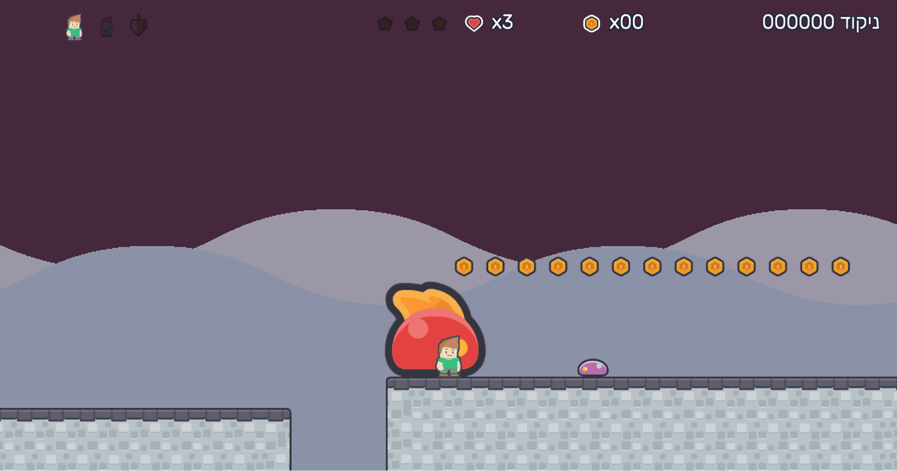
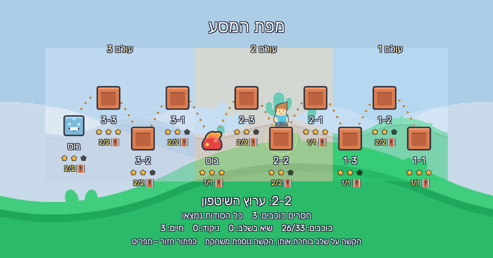
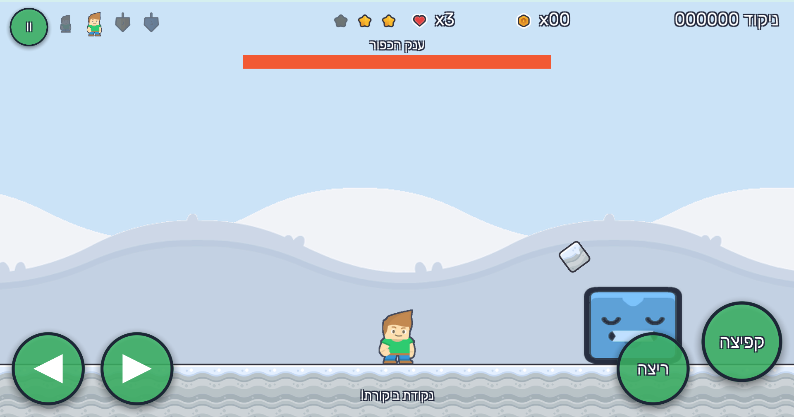
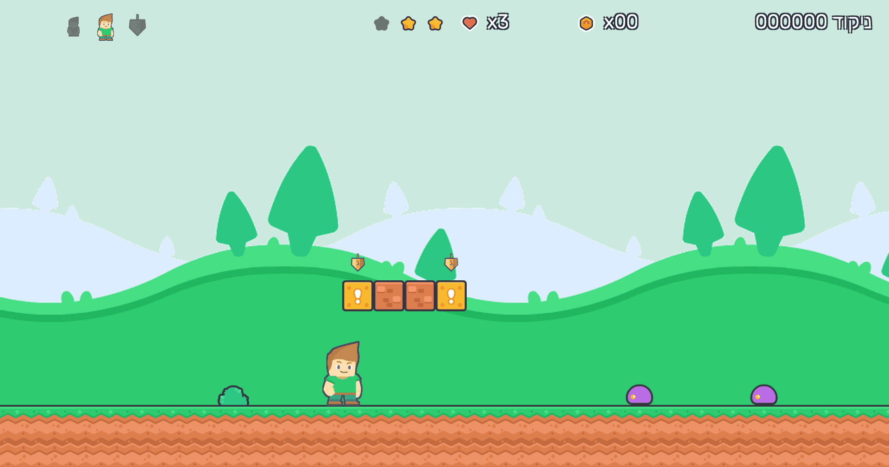
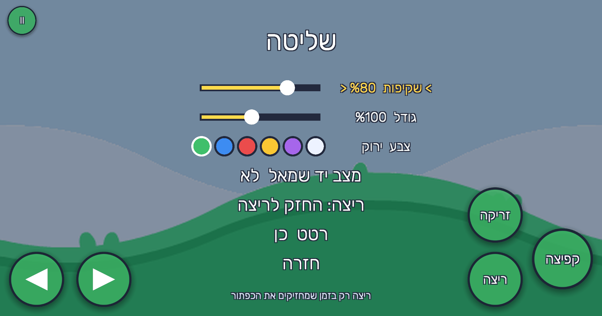
Android
התקנה בטלפון
- פותחים את הדף הזה בטלפון ולוחצים על כפתור ההורדה.
- כשההורדה מסתיימת, פותחים את הקובץ.
- אם ההתקנה נחסמת, נכנסים להגדרות שהטלפון מציע ומאשרים התקנה ממקור לא ידוע עבור הדפדפן.
- חוזרים אחורה ולוחצים על "התקן".
- אם מופיעה אזהרת אבטחה, בוחרים "פרטים נוספים" ואז "התקן בכל זאת".
Linux
הרצה מהטרמינל
curl -LO https://github.com/israelb014/kfitsa-gdola/releases/download/v2.0.0/KfitsaGdola-linux.tar.gz
tar xzf KfitsaGdola-linux.tar.gz
cd linux
./KfitsaGdola.x86_64